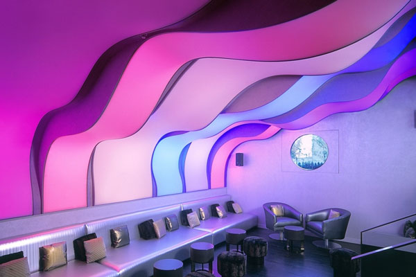

Преимущества натяжных потолков перед прочими:
-
Идеально ровная поверхность
Технология установки натяжного потолка похожа на изготовление барабана - на обод (багет, расположенный по периметру комнаты), натягивается ткань (полотно из ПВХ). Таким образом потолок приобретает идеально ровную поверхность, которой невозможно добиться с помощью другого варианта оформления потолка.
-

Или идеально неровная
Эластичность пленки позволяет создавать сложные геометрические конструкции в пространстве, не ограничиваясь плоскостями и острыми углами. Волны, арки, сферы, своды и купола - возможности натяжных потолков предоставляют широкий простор для творчества и позволяют реализовывать интересные дизайнерские решения.
-

Безупречно равномерный цвет
Цвет натяжного потолка обусловлен цветом пленки и, таким образом, не подвержен недостаткам поверхностной окраски: на нем не может быть разводов от валика или неоднородно окрашенных мест. Предлагаемая палитра насчитывает более 200 цветов и оттенков и постоянно расширяется.
-

Многообразие текстур
Одним из самых заметных преимуществ является многообразие текстур - натяжные потолки предлагают не только классическую матовую поверхность, но и перламутровый блеск сатина, зеркальный блеск лака, мягкость бархатной поверхности и даже прохладу камня. Некоторые решения могут предложить только натяжные потолки.
-

Фотопечать
Натяжные потолки предлагают уникальную возможность нанесения любого изображения с помощью широкоформатного плоттера. Изображение может занимать всю поверхность полотна или его часть. Вы можете напечатать, например, логотип компании, эмблему любимой спортивной команды, фотографию или даже синее небо над головой.
-

Световые решения
Использование прозрачных и полупрозрачных полотен, а так же новых профилей с led-подсветкой открывает новые возможности в освещении: 3-D и "парящие" потолки, витражи, световые панели и другие интересные решения. Они могут использоваться как отдельно, так и в сочетании с классическими люстрами и различными встроенными светильниками.
-

Быстрый монтаж
В отличие от потолков из ГВЛ, монтаж которых занимает от 3 до 7 дней, установка потолков занимает несколько часов. Кроме того, помещение не требует подготовки: не нужно выносить из комнаты мебель и закрывать обои и пол - достаточно убрать цветы и убедиться, что есть доступ к стенам.
-

Чистая установка
Монтаж натяжных потолков происходит с использованием оборудования, оснащённого пылеудалением, которое уменьшает пыление на 97% и исключает образование грязи и отходов, характерное для строительных работ. Поэтому устанавливать натяжные потолки можно на любом этапе ремонта или в полностью отремонтированном помещении.
-
Водонепроницаемость
Вас залили соседи или крыша прохудилась во время дождя? Переживать нет причины: потолок не только не будет повреждён, он ещё и спасет ваше имущество от затопления, т.к. способен выдержать до 100 литров воды на 1 кв.м. Мастер сольет воду через технологическое отверстие, демонтирует потолок, высушит его и поставит на место.
-
Гарантия 10 лет
Эксплуатационные качества натяжных потолков позволяют нам гарантировать их долговечность: физико-химические свойства пленки ПВХ делают ее неуязвимой для вредного влияния влаги и изменений температуры, а эластичность позволяет игнорировать усадочные движения здания, которые приводят к трещинам более жестких материалов.